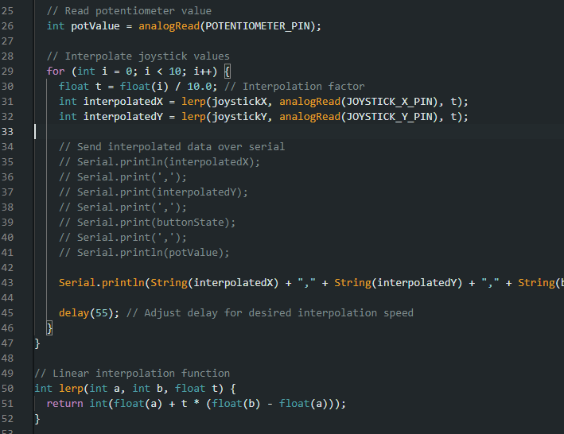

For this module, I set out to make a mini-game (in the same vein as Space Invaders) that could be
played in some way or another using the TTGO T1.
I had always been fascinated with older titles like Space Invaders, as their forward-facing
simplicity was oftentimes accompanied by complex, clever
implementations that optimized for memory usage and speed. Unfortunately, that is not at all what I
ended up producing for this project, as there were
several struggles mostly attributed to the technology stack I chose (more on this later).
Regardless, I was able to produce a Space Invaders-like clone
that runs in the browser and is entirely controlled by an ESP32 with a joystick!
The game is simple: you control a little green square with the joystick wired to the ESP32. The goal
is to shoot the purple triangles that spawn at the top of
the screen at random positions. There is no actual end to the game, but the enemy triangles will
spawn faster and more frequently as time goes on, making it hard
to clear the screen of all enemies.
The controller consists of the ESP32 connected to a joystick, potentiometer, and a button. By
plugging in the USB C cable into the ESP32, the device was
able to communicate its values to the host computer over Serial, which would be received by the
frontend in the browser. As you may have guessed, the
joystick was used to control the player's movement, while the button was used to shoot 'bullets' at
the enemy triangles. The potentiometer was a little more interesting
however--it wasn't immediately clear to me how to incorporate it into my design. The game is as
simple as it gets: you move the player with the joystick and shoot with the button.
I decided to use it to interact with the state of the game rather than the player. By turning the
potentiometer, you can manually increase and decrease the spawn rate of the enemy triangles
to provide the user the opportunity to make the game easier or harder. To help communicate this, the
color of the background changes on a grayscale spectrum to indicate the difficulty level,
with pure white being considered the fastest you can make the spawn rate.
While development of the project was relatively straightforward, as I indicated earlier, the
technology stack I chose served as a significant barrier at times due to how fragile the system was.
To be specific, the choice to develop the game in the browser using Three.js was a poor one, as it
not only introduced some implementation issues (I have little experience with Three.js) but it
seemed
to introduce irreparable performance issues that plagued the game's functionality. Specifically, the
game Serial communication proved to be a significant bottleneck, as getting smooth movement out of
the
Serial values was next to impossible. Player movement had a consistent 'jitter' to it that proved
difficult to debug. At first, I had speculated it had something to do with how the ESP32 was
communicating the X and Y
positions over Serial. Maybe some values were being lost or misinterpreted? Perhaps a potential baud
rate difference?

I even tried implementing some basic smoothing algorithms such as linear interpolation to try and
fill in any potential gaps. This seemed to help a tiny bit but it was clearly not tackling the main
issue still. I had also tried to implement a simple 'deadzone' for the joystick, but that didn't do much.
After trying several things to little to no avail, I concluded there was probably a quality issue with the
hardware itself. Maybe the joystick was loose? Regardless of what it was, it served as the biggest obstalce in completing
this module.
In all, I enjoyed the chance to make this very much. It was cool to have an opportunity to build a project
with a collection of parts that I usually don't think as being together but regardless was still able to
produce something interesting!